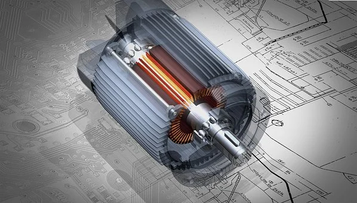

The developing impact of the internet in the world and the obscuring domains while bringing the world nearer than any time in recent time has led to the appearance of study abroad. Better open doors, more openness, and great learning will allow them an opportunity to construct a promising future, all the more so with the valuable chance to study mechatronics in Germany or seek other engineering courses. Anyway, a few students tragically saw their dreams getting broken because of the absence of education funds. There was no test in the ability part in any case, on account of financial obstacles, students couldn’t sharpen their abilities to become enough to remain in the competition. In this manner, they continued to lose valuable open doors to those students who are financially solid with less inability. However, today circumstances are different. Universities in Germany are giving open doors to every individual who academically has the right to look for the opportunity to study in their esteemed foundations and become worldwide residents through courses like a single man of mechatronics engineering in Germany, among others. With the predominance of the internet, data is spreading at a quicker pace today.
Students while studying mechatronics engineering in Germany or different courses are additionally given chances to work away at part-time jobs to apply their reading material information. The scholarship furnishes them with accommodation and fee structure and on the other hand if a student finds a new line of work there, she/he can support his different needs too. This way the student who studies mechatronics in Germany can acquire information as well as a drive to climb the ladder. The course will outfit the student with the fundamental information and capacity so she/he can flourish in his/her career. Education is the key that has the potential to open many doors. Studying mechatronics engineering in Germany, which is the greatest contributor of innovation and instruments to the world, will allow me an opportunity to construct a promising profession.